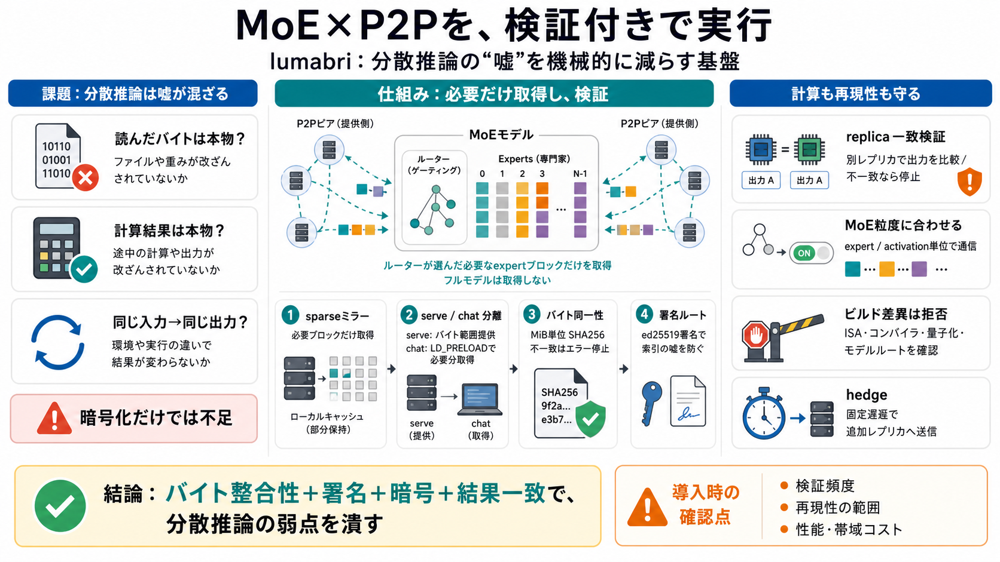

ChaCha20-Poly1305 - Wikipedia
ChaCha20-Poly1305 is an authenticated encryption with associated data (AEAD) algorithm, that combines the ChaCha20 strea…

巨大なMixture-of-Experts（MoE）を、単一サーバではなくピアの群れ（swarm）から動かすための基盤です。モデルバイトの一致と推論結果の一致を検証しつつ提供します。
通信は暗号化できても、「どのバイトを読んだか」「計算結果が本物か」は分散特有のリスクとして残ります。さらに再現性（同じ入力→同じ出力）も崩れやすいです。
モデルを丸ごとDLせず、必要になったブロックだけ取得してローカルに“疎ミラー”します。再取得は内容アドレス（SHA256）で重複排除され、2回目以降は高速化します。
`serve`がモデルディレクトリのバイト範囲読み出しを担い、`chat`はLD_PRELOADで推論時に必要なブロックだけを取得します。取得済みはローカルにミラーされ、以後はページキャッシュで読めます。
colibri由来のルールとして、同一バイト（SHA256/MiB単位）を検証し、失敗時は沈黙せずエラーにします。改ざん・欠損のリスクを前提から外す設計です。
mantainer登録時にMiB単位のSHA256を送り、オフライン保管の署名鍵でオリジンがed25519署名します。trackerは署名できず、偽の真実を作る余地を抑えます。
expert実行の出力は信用せず、同一呼び出しを別レプリカでも実行して一致確認（スポットチェック等）します。食い違えば実行を止めます。
専門家選択の粒度（例：4KB activation）に合わせて通信を行い、行単位へ不用意に分割しないことでトークンの一致性を担保します。MoEの構造に“検証可能な分割”を合わせています。
ピアは自分のビルド情報（ISA/コンパイラ/量子化/モデルルート等）を広告し、チャッタ側は異なるビルドのピアを使う前に拒否します。CPU最適化差による“最後のビット”変化を事前に減らします。
`LUMABRI_HEDGE_MS`で指定したミリ秒後に追加レプリカへ二重送信します。SLA最適化ではなく“意図的に固定遅延”で挙動を規定し、部分障害時の予測可能性を高めます。
READMEだけでは、(1) ハードウェア差までの再現性保証、(2) スポット検証の頻度と“見逃し”確率、(3) 検証コスト/帯域増加の定量が不足しています。CAS・sparseミラー実装がボトルネックになる可能性もあります。
lumabriは、バイト整合性（SHA256）＋署名＋暗号＋結果のreplica一致検証で、分散推論の信頼性・セキュリティ・再現性問題を機械的に抑えにいきます。導入判断では、検証頻度・再現性範囲・性能/コストの追加評価が鍵になります。
ChaCha20-Poly1305 is an authenticated encryption with associated data (AEAD) algorithm, that combines the ChaCha20 strea…
Working prototype, deployable. Open swarms verify bytes (sha256 per MiB, signed by the operator's ed25519 key, checked b…
New York City Next: Jun 3 Nashville Last: 1d agoEncarnación icon Encarnación Last: 1w agoTulcán icon Tulcán Next:…
ChaCha20-Poly1305 is an AEAD cipher, and requires a unique nonce input for every encryption operation. RFC 7539 specifie…
is RFC 8439, “ChaCha20 and Poly1305 for IETF Protocols” . [...] encrypted with the same key. [...] it has not been tampe…